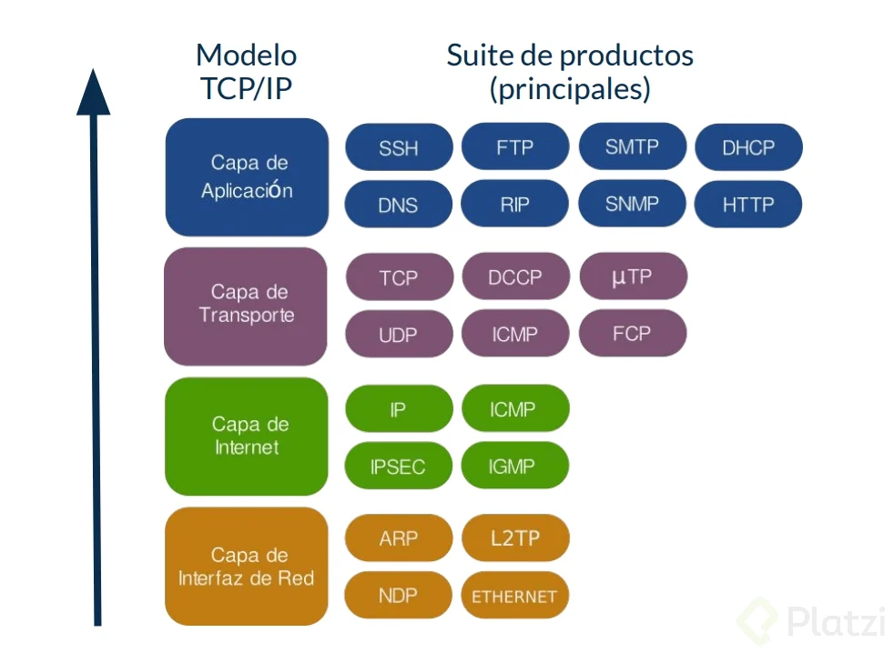
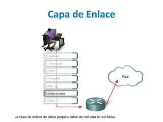

- Capa de Aplicación: Provee servicios a las aplicaciones de usuario.
- Capa de Transporte: Garantiza la transmisión de datos entre dispositivos.
- Capa de Internet: Gestiona la dirección IP y el enrutamiento.
- Capa de Acceso a Red: Se encarga de la transmisión física de datos.
Capas del Protocolo TCP/IP
El modelo TCP/IP está compuesto por cuatro capas principales:


- Tranferencia de Datos: Describe cómo se transmiten los datos entre diferentes dispositivos.
- Control de Errores: Es un conjunto de técnicas utilizadas en la transmisión de datos para detectar y corregir errores.
- Control de Flujo: Es un mecanismo utilizado en las redes de comunicación para gestionar la tasa a la cual los datos se envían entre un emisor y un receptor.
- Dirección Física: Es un identificador único asignado a la interfaz de red de un dispositivo.
- Acceso al Medio: Se refiere a los métodos y técnicas utilizados por los dispositivos en una red para compartir y utilizar de manera eficiente un medio de comunicación común

- Enrutamiento de Paquetes: Es el proceso mediante el cual los routers y otros dispositivos de red determinan el camino más adecuado para que un paquete de datos viaje desde su origen hasta su destino a través de una red, como Internet.
- Direccionamiento IP: Es un sistema utilizado para identificar de manera única a los dispositivos en una red basada en el protocolo IP.
- Fragmentación y Reensamblaje: Son procesos fundamentales en el funcionamiento del Protocolo de Internet (IP), especialmente cuando se trata de enviar paquetes de datos a través de redes con diferentes capacidades de transmisión.
- Control de Errores: Es un conjunto de técnicas utilizadas en redes de comunicación para garantizar que los datos transmitidos entre dos dispositivos.